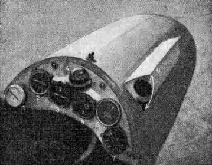
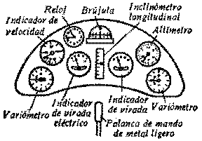
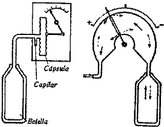
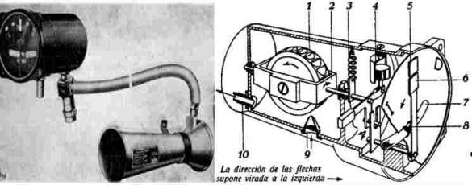
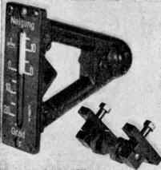
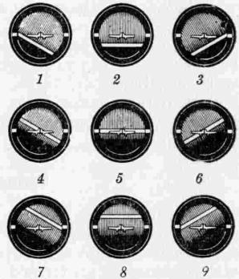
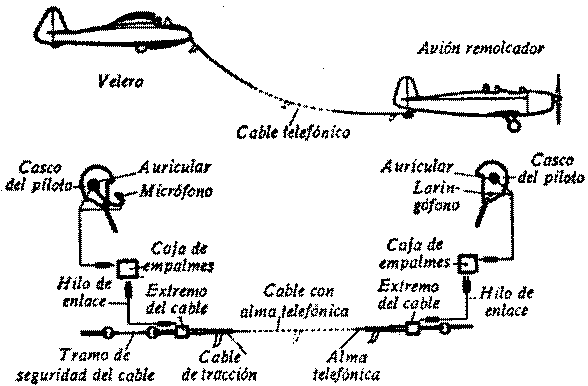
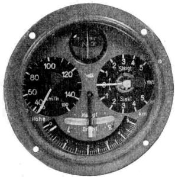

|
Inicio
Bibliografía
Noticias
Hangar
Actividades
Cursos
Comisión
Fotos
Videos
Ubicación
Contáctenos
Links
|
|
Manual del Vuelo a Vela
Wolf Hirth - 1942
El vuelo
por Heinz Kensche
Instrumentos de a bordo para veleros
por HERMANN RUTHARDT y THEO ERB
Los primeros grandes éxitos del
vuelo a vela fueron alcanzados con aparatos sencillísimos y sin disponer de todos los
instrumentos por hombres que no sólo pusieron en su obra todo su valor y su ánimo, sino
que también hicieron incansable trabajo de detalle, reuniendo siempre los resultados de
sus ensayos y tentativas para afinar su sentimiento del vuelo. Sin embargo, estos tiempos
pasaron ya. Ciertamente que el sentimiento del vuelo no estorba nunca, pero ya no basta.
Si se considera la evolución
del equipo del avión, se puede ver que, al principio, como en todo lo relativo al vuelo a
vela, se perdía el tiempo lastimosamente, y que, por espacio de cinco anos, sólo a duras
penas se avanzaba; no solamente en lo relativo a fijar las ideas fundamentales que debían
seguirse, sino hasta en los menores detalles. Siempre se mejoraban las marcas de vuelo
en un dos por ciento, pero no hubo franca elevación de estas marcas ni se esperaba para
los años inmediatos.
¿ Cómo estaba la cuestión
entre los pilotos ? Cuando en 1931 hizo Groenhoff su vuelo de 272 km., todo el mundo
creía que este resultado sólo podía alcanzarse con ayuda de un frente tormentoso
extraordinariamente favorable. Pero en 1935, en el concurso del Rhön, cuatro pilotos, en
día de hermoso sol, hicieron el vuelo de marca de distancia Wasserkuppe-Brünn (502
km.) y esto con los antiguos aparatos de entonces, como, por ejemplo, un «DB-10» del
año 1931.
La causa de esto no estaba en
la mejora de las características de los aviones, sino en los pilotos; hoy cualquier
piloto, desde el principio de su carrera, conoce la técnica del vuelo térmico que hace
cinco años era sólo conocida por los grandes maestros que trabajosamente la habían
aprendido.
Pero jamás habría llegado el vuelo térmico a su actual
importancia, si no hubiese sido por el empleo del variómetro, el cual puede decirse que
es el instrumento más importante del piloto de velero.
Es cierto que un piloto ejercitado advierte inmediatamente
el momento en que atraviesa una ascendencia térmica, pero el saber que, aunque la
situación meteorológica no sea francamente favorable, puede todavía sostenerse allí, y
que en otro sitio perdería quizá su altura, alcanzada con muchos trabajos, eso sólo se
lo pueden decir sus instrumentos.
Cualquier piloto de velero puede tener bastante con su
sentimiento para garantirse contra el peligro de resbalar, a consecuencia de volar con
velocidad demasiado pequeña pero sacar de su aparato todo el partido que pueda, sólo lo
puede hacer con instrumentos precisos. A este propósito se puede citar, por ejemplo, que,
dada cierta velocidad de vuelo, la mejor velocidad de descenso (que no necesita ser la
mínima, como muchos creen) corresponde al mejor ángulo de planeo, referido al suelo; con
otra velocidad, en caso de viento de proa o de popa, será diferente, etc. Por tanto,
quien quiera « volar » efectivamente en su aparato, exige al constructor que le facilite
esos datos y con ellos sabe si va bien o no su indicador de velocidad.
Muchos problemas de navegación no pueden resolverse sin
instrumentos; por ejemplo, el vuelo en nube es casi siempre imposible sin taquímetro y
sin indicador de viraje y hasta es extraordinariamente peligroso en todos los casos sin
esas ayudas. A nadie se le ocurrirá hacer un vuelo de altura sin ir provisto de
altímetro, y puede decirse que un vuelo con objetivo fijado, no llevando brújula, aunque
el piloto conozca casualmente la comarca, no dejaría de ser, por lo menos, muy difícil.
Estos ejemplos se pueden multiplicar cuanto se quiera.
Naturalmente que lo dicho no debe hacer creer que sólo se
ha de volar con la guía de los instrumentos. Sobre todo, en el vuelo sobre una ladera,
hay que tener la vista fija en el terreno y en los otros aparatos que vuelen. Tampoco se
debe despreciar la sensación de inseguridad, si se presenta, porque puede fallar el
taquímetro o cualquier otro instrumento. Los instrumentos, en estos casos, no
sustituyen a la sensación, sino que la completan.
Disposición de los instrumentos
Es
imposible dar una fórmula general para la colocación de los instrumentos en el tablero;
son muchas las circunstancias que intervienen en ello. Desde luego, el espacio
disponible, el número de instrumentos y principalmente la clase de empleo que va a
darse al avión y también la vista del piloto, cosa que no debe dejarse de tener en
cuenta y, finalmente, la seguridad para casos de aterrizajes violentos. Deben evitarse a
toda costa los bordes y cantos agudos, etc., sobre todo a la altura de la cabeza, porque
podrían causar heridas peligrosas.

Fig. 74. Tablero de
instrumentos de un velero moderno
1. Altímetro. - 2.
Variómetros. - 3. Indicador de virada. - 4. Brújula. - 5. Indicador eléctrico de
virada. - 6. Indicador de velocidad. - 7. Variómetro. - 8. Tobera eclipsable del
indicador de virada
Puesto que
todos los instrumentos se venden en grandes cajas, no ofrece dificultad el cambiar unas
por otras, aunque sean de distinto fabricante.
En general, los instrumentos que se necesitan en el vuelo
sin visibilidad deben ir juntos en el centro del tablero y en zona bien visible. Estos
son: indicador de viraje, indicador de velocidad o taquímetro y brújula; de esta última
puede prescindirse muchas veces, pero su necesidad se hace cada vez mayor con el vuelo de
objetivo fijado. A los lados se instalan el altímetro, variómetro y demás instrumentos.
En caso de que no se lleven instrumentos para el vuelo sin visibilidad, lo mejor es poner
el variómetro en el centro (fig. 74).
Como ejemplo, se da un esquema del tablero de instrumentos
empleado en los concursos por Wolf Hirth, desde 1933 (fig. 75). El indicador de viraje y
el variómetro son dobles para mayor seguridad. Uno de los indicadores de viraje es
eléctrico, con el que no puede temerse el peligro de la helada. Los variómetros -
instrumentos basados en diferentes principios de indicación - van a derecha e izquierda
hacia el exterior, para que al virar no sea necesario separar la vista del lado de dentro
de la curva.

Fig. 75. Tablero de instrumentos para velero de concurso
Causas de
error para un altímetro muy sensible, y especialmente para el variómetro, son las
variaciones de presión que pueden producirse en la cabina del piloto, a consecuencia de
formación de torbellinos, depresión, etc. Tales errores pueden evitarse haciendo que las
entradas de aire para la compensación estática de la presión se tomen, por medio de
conductos tubulares, de una zona en donde no esté perturbada la presión, siendo lo más
sencillo hacerlo en el empalme de la tobera del tubo de Pitot.
No es necesario decir que algunos instrumentos deben
montarse en el tablero, de modo que aunque esté inclinado resulten verticales en el vuelo
normal de planeo, cosa necesaria en el indicador de pilotaje y, con grandes
inclinaciones, también en la brújula y en el indicador de viraje; además, en todos
aquellos instrumentos en que el fabricante lo indique de modo explícito en las
instrucciones que les acompañan, las cuales, naturalmente, hay que seguir exactamente.
Indicador de velocidad o taquímetro
Los abuelos de nuestros veleros actuales de concurso, y eso si
eran muy distinguidos, llevaban orgullosamente un anemómetro de cazoletas. Tenia la
ventaja de no ser sensible a las corrientes laterales, pero ofrecía gran resistencia al
aire y, sobre todo, tenía mucha inercia en sus indicaciones. Hoy se
usa el anemómetro solamente como instrumento de tierra para
medir el viento, y como indicador de velocidad se emplean sólo instrumentos basados en
los efectos de presión.
En los aviones de motor se usa principalmente el tubo de
Pitot (véase El hombre
vuela, EDITORIAL LABOR, S. A. Barcelona.- N. del
T.), en el que se produce una sobrepresión,
teniendo un campo de medida que va desde los 50 a los 300 km/hora y más. Para las menores
velocidades de los veleros, que exigen sólo un campo de medida de 30 a 150 km/hora, se
emplea, por el contrario, el llamado tubo de Venturi, en el que se produce una aspiración
dependiente de la presión dinámica del aire. En ambos casos se miden las diferencias de
presión del aire en un instrumento dispuesto análogamente a un barómetro. Para más
facilidad, los instrumentos están graduados, no en kg/m2., sino
en velocidades de km./hora. La tobera de toma de aire se instala en la zona en que la
presión esté menos perturbada, poniéndose casi siempre en el extremo de proa del
fuselaje. En los aviones de motor se usa, generalmente, este instrumento con calefacción
para evitar la helada en los vuelos en nube, pero en los veleros suele prescindirse de
este complemento por razones de economía de peso.
También este género de instrumentos tiene pequeña
inercia de indicación, que en los veleros es de muy poca importancia, por la pequeña
longitud de los conductos de aire. En las grandes alturas, la velocidad real es algo mayor
que la indicada por el instrumento, pero como la presión dinámica del aire en la que
debía estar graduado el instrumento sigue siendo correctamente indicada, este fenómeno
no tiene importancia alguna y no debe ocuparse de él el piloto, puesto que las
condiciones del aparato dependen, en sentido estricto, no de la velocidad, sino de la
presión dinámica.
Para terminar, daremos una indicación referente al vuelo
sin visibilidad hecho con taquímetro; si por alguna causa se nota aumento de velocidad y
el indicador de viraje marca un giro o bien está normal, el principiante intenta llevar
rápidamente a su valor normal la indicación del taquímetro tirando de la palanca, y
resulta que cuando, efectivamente, el indicador de velocidad se ha normalizado, el aparato
está casi tan encabritado como cuando se está haciendo « el hombrecito » (se alude a
la figura acrobática de este nombre, de la que se habla después. - N. del T.) en el aire y la « pérdida » está al empezar.
Lo que se debe hacer en este caso es ir engañando al
instrumento hasta que se calme, con suaves tirones de palanca, y así se llega a la
velocidad normal. También puede servir de ayuda, en este caso, un clinómetro
longitudinal y poner atención al silbido de la marcha.
Variómetro
Como el
variómetro es el instrumento más importante para el piloto de velero (véase el vuelo
térmico y el vuelo de distancia), se debe dedicar especial atención para elegirle.
Muchos pilotos llegan hasta usar, para más seguridad, dos variómetros de distinto tipo
(fig. 75).
La medición de la velocidad ascensional se apoya, como la
de la altura, en que la presión disminuye con la altitud. Se emplean dos tipos de
variómetro:
1.º
El
variómetro de cápsula
Mi
profesor de vuelo a vela se cuidaba de aclarar el asunto diciendo: « Si se quiere medir
la relación de la primera diferencia de altura a la del tiempo, es decir, la velocidad
ascensional, hay que hacer un orificio en la cápsula de un altímetro. » El modo de
funcionar un variómetro de esta clase se apoya en el hecho de que la cápsula de un
barómetro muy sensible esté en comunicación con el aire exterior. Si la presión
permanece constante, es decir, no varía la altura de vuelo, la presión interior de la
cápsula se equilibra con la del aire exterior y el indicador marca 0. Al subir, la
presión del aire exterior disminuye más rápidamente que la de la cápsula, que sólo
puede equilibrarse por un conducto capilar. La sobrepresión que resulta es tanto mayor
cuanto mayor es la velocidad ascensional: la cápsula se dilata y la dilatación se
transmite a una aguja, como en el caso de un barómetro.
Cuando se pierde altura los fenómenos ocurren en sentido
contrario (fig. 76).
En los instrumentos modernos, para aumentar la
sensibilidad, la cápsula del variómetro está en comunicación con una botella aislada
térmicamente y de este modo es mayor la cantidad de aire que está separada del exterior,
y como por este medio la mayor parte del aire separado está protegida contra los cambios
de calor, el instrumento resulta insensible a la influencia de la temperatura.Se
comprende que  un instrumento tan
sensible como el descrito requiere ser tratado con mucho cuidado. Nunca se debe
soplar en el tubo de comunicación para probar su estado de servicio; para provocar
una desviación de la aguja del instrumento basta con cerrar la salida del tubo y entonces
comprimir un poco el neumático.
Fig.
76. Variómetro de cápsula (izquierda) y variómetro de presión dinámica (derecha)
Un
inconveniente del variómetro de cápsula es la inercia de sus indicaciones; el
instrumento « es perezoso »; a veces se retrasa varios segundos. Por consiguiente, hay
que elegir un instrumento que marque más de prisa.
2.º
Variómetro de disco de presión
Los
instrumentos basados en el efecto de la presión del aire sobre un disco son más
convenientes, desde el punto de vista de la rapidez de indicaciones.
El principio en que se basan está indicado en la figura
76: al disminuir la presión exterior, el aire del termo sale por estrecho conducto, con
lo cual obra sobre el disco ejerciendo una presión que le obliga a separarse de la
posición 0, y esto según sea la velocidad de salida del aire; el disco está sostenido
en la posición del 0 por un débil muelle y el movimiento que toma se marca por medio
de una aguja. Al descender, es al contrario: el aire fluye hacia la botella y produce así
una desviación contraria del disco.
Otra ventaja del instrumento es la de que no importa que
la subida o el descenso sean muy rápidos, pues siempre tiene la misma sensibilidad.
Brújula
Con el
aumento del número de vuelos llevados a cabo libremente sobre cualquier terreno y de los
vuelos con objetivo fijado, la brújula fue tomando, cada vez, mayor importancia. En
los veleros sólo se usan las brújulas magnéticas.
Antes se usaban brújulas con el limbo horizontal para ser
observado desde arriba ; pero hoy, por el contrario, se tiende cada vez más al empleo de
brújulas con el limbo cilíndrico vertical para ser observado lateralmente ; tiene la
ventaja de que así es un instrumento que, como los demás que han de montarse en el
tablero, presenta vertical su cuadro de observación.
La dirección del vuelo se lee ahora en el cuadro con un
índice v no como en los limbos horizontales, en los que la lectura se hace por la
desviación contraria que marca la aguja. Además de las direcciones de los puntos
cardinales, están marcados los grados (no los rumbos como en la brújula para buques) y
muchas veces están las indicaciones divididas por 10, de modo que en vez de 30º figura
sólo un 3, y en lugar de 360º sólo 36. Así se comprende
que algunos alumnos a quienes se les ordenaba volar con el rumbo de 270º, después de algunos titubeos aterrizaban,
porque ¡ su brújula sólo tenía 36 ¡ Después de montar el instrumento en el avión
hay que cerciorarse de que sus indicaciones coinciden realmente con las direcciones
cardinales.
En los veleros las desviaciones de esas direcciones son
pequeñas. Los pilotos de velero muestran cierta aversión a la compensación de la
brújula (hacer desaparecer los errores en las marcaciones por la influencia de las masas
metálicas próximas; declinación o
ángulo entre el norte magnético y el verdadero) y demás «pequeñeces». Muchos de
los tipos de brújula destinados a veleros no son susceptibles de compensación ; si se
puede hacer, basta seguir las indicaciones de la casa constructora.
También favorece la exactitud de las indicaciones de la
brújula el empleo, cada vez más frecuente, de aleaciones ligeras, en lugar de acero,
para la palanca de mando y demás órganos, cosa que se hace con el fin de economizar
peso.
Desde luego, se evita el empleo del hierro en todo lo que
va en el tablero de instrumentos.
Lo conveniente es que la brújula tenga buen
amortiguamiento; en tiempo de rachas o en los vuelos en nube, la brújula se pone
fácilmente a « bailar ». Los pilotos dicen, por tanto: « No hay que fiarse de la
brújula en tanto no gire más de prisa que el avión ».
En los tipos corrientes de brújula el limbo flota en
alcohol o en otro líquido para el amortiguamiento; por ejemplo, en petróleo
adecuado.
Más tarde la brújula electrónica, desprovista de
inercia y que se basa en la desviación de los rayos catódicos por el campo magnético
terrestre, sustituirá sin duda a la actual brújula magnética.
Altímetro
El
altímetro es siempre un instrumento aprovechable; pero en el vuelo en nube y en los
problemas que se presentan en los concursos es indispensable.
Según la extensión de su campo de medida, así se
distinguen los altímetros en corrientes y de precisión. El campo de medida corriente
es 3000 m.; sin embargo, los vuelos de los tiempos futuros exigirán los 5000 m. Con esto
habrá bastante, así como será suficientemente exacta su lectura. Altímetros de
precisión que den la altitud con error de 5 m., solamente son necesarios en los veleros
en casos especiales, como, por ejemplo, si se trata de vuelos de estudio. En esos
altímetros el campo de medida llega, en general, sólo a los 1000 m.
Modernamente hay también altímetros muy prácticos de
doble aguja, en los cuales los movimientos de una aguja están amplificados diez veces con
relación a los de la otra, de modo que cada división es para una aguja 10 m. y para la
otra 100 m., resultando que este instrumento sirve a la vez de altímetro ordinario y de
altímetro de precisión. El único inconveniente de este tipo es su elevado precio.
Los altímetros para veleros están construidos como un
barómetro: indican la diferencia de presión en distintas alturas y están graduados en
metros y en kilómetros. El órgano principal consiste en una cápsula elástica, que
resulta comprimida más o menos por la presión exterior, según su valor, y estas
variaciones de forma se transmiten a una aguja. Los buenos instrumentos están compensados
respecto a las influencias de temperatura.
Como la presión atmosférica no solamente varía con la
altura, sino también según la situación meteorológica, es necesario hacer que la aguja
marque 0 cada vez que se despega. Cuando se vuela sobre aeródromo o para no salir del
terreno de la escuela, se ajusta el altímetro de modo que marque 0 en el suelo o sea con
la altitud del punto de salida: muchos altímetros no tienen escala lineal, es decir, la
distancia entre las rayas de una división que corresponda a 100 m. es distinta para
altitudes diferentes respecto al nivel del mar; en este caso pueden resultar pequeños
errores con ese modo de proceder (Pues en efecto, no es el mismo el recorrido de la aguja,
para la misma diferencia de alturas, a partir de alturas diferentes. Si se pone el
altímetro en 0 al nivel del mar, cuando marque 100 m. se tendrán los 100 m. sobre el
suelo. Pero si se pone el 0 a 700 de altitud, cuando marque 100 m. se tendrá en general
mas de los 100 m. de altura sobre el suelo. - N. del T.). Lo mejor es ajustar el
altímetro de modo que la aguja marque, en el momento de despegar, la altitud de salida o
sea la altura del lugar respecto al nivel del mar. Esto es desde luego recomendable en los
vuelos de distancia, puesto que en ellos lo interesante es saber la altura sobre el suelo
en cada momento y ésta puede deducirse de la carta del terreno, que contendrá la altitud
del mismo, y la altura sobre el suelo será conocida restando de la altitud marcada por el
altímetro la que indique la carta.
Con los instrumentos en los que la colocación del 0 de la
escala sea por medio de otra graduación de presión, puede también deducirse, de una
parte, la presión que existirá en una altitud dada, y de otra parte, si se conoce la
presión por los avisos meteorológicos, se puede deducir la altura de un terreno, por
ejemplo, la de un lugar desde el que se vaya a despegar y del que no se conozca ese dato.
Altímetro registrador
Si se hace que la aguja de un barómetro marque sobre un tambor
movido por un aparato de relojería, se obtiene lo que se llama un barómetro registrador
o barógrafo. Si está graduado en metros, resulta un altímetro registrador, que es el
instrumento que se lleva indispensablemente en los vuelos de estudio y como comprobante en
los vuelos de altura y de duración y en los vuelos de prueba. Los altímetros
registradores, que también suelen llamarse barógrafos, se construyen para diferentes
campos de medida y con diferentes duraciones de la cuerda del aparato de relojería. La
inscripción se hace en un papel de coordenadas (La horizontal, el tiempo y la vertical,
la presión o la altitud. Estas coordenadas no son rectas, sino curvas, adecuadas a los
arcos descritos por la aguja marcadora. - N. del T.) con
tinta especial o sobre una hoja metálica ahumada. El empleo de esta última exige más
tiempo, pero resulta más exacta y, sobre todo, más seguro, pues la tinta puede secarse,
congelarse o salpicar. Una vez obtenida la curva en la hoja ahumada, se fija por medio
de barniz.
Para interpretar el barograma es necesario emplear una
curva de calibración, la cual la facilita la casa que suministra el instrumento o bien
se solicita del DFS en Darmstadt-Grisheim.
Estos instrumentos van pendientes de resortes o cordones
de goma, y atirantados por igual medio o bien se instalan en alojamientos adecuados, que
lleva el velero, con buen almohadillado. Muchos alumnos de pilotaje se enteran
tardíamente, después del vuelo, de que el barógrafo sólo marca y se pone en marcha
cuando se le da cuerda y se suelta la uña que para ello lleva.
Registrador compuesto
Para el
reconocimiento oficial de las marcas está prescrito llevar a bordo instrumentos que,
además de registrar la altura, registren la temperatura, puesto que con este dato se
pueden corregir los errores que resultarían si sólo se interpreta la altura por medio
de la presión. Para llenar esta necesidad, el establecimiento alemán de experimentación
para el vuelo a vela (DFS) ha hecho construir un instrumento muy útil que registra, en
una sola curva, la altura y la temperatura, designándose este instrumento con el nombre
de barotermógrafo. El termómetro consiste en una lámina bimetálica arqueada, cuya
curvatura cambia cuando varía la temperatura, y estos cambios son los que se transmiten
a la aguja marcadora.
El barotermógrafo debe disponerse de modo que la lámina
termométrica reciba aire no perturbado por la marcha.
En los vuelos de experimentación o de estudio se
registran también otros elementos; especialmente, es frecuente obtener el registro de la
presión dinámica del aire y el estado higrométrico. Para estos casos se emplean los
llamados meteorógrafos u otros registradores compuestos.
Indicador de viraje
En el
capítulo « Vuelo sin visibilidad », se describirá detalladamente el empleo del
indicador de viraje, que es indispensable para el vuelo en nube u otros casos de vuelo
sin visibilidad.
Existen indicadores de viraje neumáticos o eléctricos,
los cuales sólo se diferencian fundamentalmente en la clase del mecanismo que los mueve.
a) Indicador de
viraje neumático
Consta de
dos partes:
1.ª El
giróscopo que está destinado a marcar la velocidad angular alrededor del eje vertical,
y 2.ª, un
nivel para indicar la inclinación transversal.
El giróscopo está, en general, constituido como una
pequeña turbina de aire. Dentro de la cubierta del instrumento se produce una
depresión por medio de una tobera a propósito y, por consiguiente, el aire entra a
través de otra tobera adecuada y pone en acción la turbina. Si el avión gira
alrededor del eje Z (fig. 77), el giróscopo responde, como recordará el lector por los
estudios de Física, con una rotación alrededor del eje Y; rotación que se hace
visible por medio de una aguja, y al cesar la rotación, un resorte lleva el giróscopo
otra vez a su situación normal.
El nivel está sometido a la aceleración resultante de
componer la de la gravedad con la de la fuerza centrífuga; por lo tanto, no indica la
inclinación transversal absoluta, sino solamente la relativa respecto a la inclinación
correcta que debía tener el avión al describir la curva, la cual es la más importante
para el piloto. Si la esferilla del nivel (Este elemento, con la aplicación descrita, se
designa en la terminología española con el nombre de inclinómetro o clinómetro. - N.
del T.) no está en el centro, es que el avión « resbala » o bien que « derrapa
», según que la esferilla esté del lado interior o del exterior de la curva descrita.
Hay el peligro de que la tobera, que produce la depresión dentro de la cubierta del
indicador, se cubra de hielo cuando se vuela dentro de una nube, que es precisamente
cuando más necesario es el instrumento. Para seguir volando, en caso semejante, nada
mejor que tirar del tubo de goma que lleva el aire de la tobera de aspiración y
romperle para seguir dando aire aspirando directamente el piloto. En todo caso, debe
procurarse que el tubo sea suficientemente largo para que, si ocurre esto, pueda llegar a
la boca.

Fig. 77. Indicador de
virada neumático. Arriba, a la derecha, un corte del instrumento: 1. Giróscopo. - 2.
Bastidor del giróscopo. - 3. Resorte de recuperación. -4. Amortiguador. -5. Cero del
instrumento. - 6. Índice.-7. Nivel.-8. Esferilla. - 9. Tobera.- 10. Enchufe para la
tobera de aspiración.-
Durante
algunos minutos se puede salir del paso de este modo, aunque claro es que no resulta
agradable.
b) Indicador de
viraje eléctrico
El
giróscopo recibe el movimiento por medio de un pequeño motor de corriente continua, el
que, a su vez, es puesto en acción por la corriente de una batería ordinaria de
lámparas de bolsillo. Para conservar la batería se puede poner a tierra el indicador
por medio de un interruptor mientras no sea necesario usar el instrumento. También debe
llevarse una batería de repuesto para poder cambiarla, si el piloto advierte que la que
va montada esta ya muy gastada. EI empleo
de estas baterías de bolsillo normales tiene la ventaja de que pueden adquirirse
fácilmente.
El indicador eléctrico tiene dos ventajas que se ven
inmediatamente:
1.ª No hay peligro de helada.
2.ª No se necesita tobera de aspiración, que da lugar a
resistencia perjudicial.
Clinómetro longitudinal
 Como todos los
clinómetros usados están fundados en la acción de la gravedad, estarán sometidos
también a la influencia de todas las demás causas de aceleración; por esto, sus
indicaciones son sólo exactas cuando el estado de vuelo no tiene aceleración.
Fig.
78. Inclinómetro longitudinal
En
tanto que se vuele viendo el terreno, no es necesario un clinómetro longitudinal,
exceptuando los vuelos de estudio u otros casos especiales. Por el contrario, es
utilísimo en el vuelo sin visibilidad como complemento del taquímetro, al que, hasta
cierto grado, puede sustituir, si llegase a fallar éste a consecuencia de depósitos
de hielo, y como por otra parte es económico, debe llevarse siempre en los aviones cuando
se espere o intente un vuelo en nube.
Las dos clases principales de clinómetro son: un péndulo
con amortiguamiento por aire cuyos movimientos se transmiten a una aguja indicadora, y un
nivel de líquido, siendo este último tipo el más usado en los veleros (fig. 78).
Consiste esencialmente en un tubo en U de vidrio, lleno
hasta su mitad con un liquido coloreado y montado en el tablero de instrumentos de modo
que su plano coincida con el de la dirección del vuelo: una rama del tubo es visible en
el tablero y lleva una escala dividida en grados.
Horizonte artificial
El horizonte artificial tipo Sperry, de la casa Askania, ha resultado ser un instrumento
perfecto como complemento del indicador de viraje,
según se vio en los vuelos de distancia con objetivo marcado y en el concurso del Rhön
de 1938.
Lo mismo que el indicador de viraje, es también éste un
instrumento giroscópico en el que en lugar de indicarse como en aquél la rotación y la
inclinación transversal correcta del avión, se marca la inclinación real alrededor de
los ejes transversal y longitudinal (fig. 79).
Hasta ahora sólo se ha construido el horizonte
artificial como instrumento de acción neumática.
El movimiento se consigue, lo mismo que en el
indicador de viraje, mediante una tobera de aspiración y una turbina de aire,
constituida como giróscopo: solamente que el giróscopo está montado con
suspensión cardánica completa, así que las desviaciones pueden tener efecto en dos
direcciones.
En el círculo de observación del instrumento está
visible un avión mirado desde popa, y la inclinación transversal y longitudinal del
avión resulta marcada por el movimiento de una línea que representa el horizonte y cuya posición depende de la posición del avión.

Fig. 79. Horizonte artificial, marca Sperry.
1. El velero vira a la izquierda encabritado. -2. El velero
vuela horizontal y encabritado. - 3. El velero vira a la derecha encabritado. -4. El
velero vira normalmente a la izquierda. - 5. El velero en vuelo normal; la proa apunta al
horizonte. -6. El velero vira normalmente a la derecha. - 7. El velero vira a la
izquierda en picado. - 8. El velero vuela horizontal y picado. -9. El velero vira a la
derecha en picado.-
Para hacer aun más patente el
efecto, detrás de la recta del horizonte hay una placa que debajo del pequeño avión es
negra y por encima de color azul claro; esa placa solamente tiene movimientos de
inclinación pero no verticales aunque se incline el avión; de este modo se representa, con ilusión completa, el cielo y la tierra.
Desgraciadamente, este instrumento tiene el inconveniente de que su tamaño y peso son
demasiado grandes para un velero, así que solamente se usa en los aviones ordinarios de
motor. Para los veleros sería de desear un instrumento análogo más pequeño, a ser
posible con acción eléctrica.
Reloj de a bordo
Es
recomendable llevar un buen reloj de lectura clara en los vuelos de prueba, de duración y
de distancia; y, naturalmente, en último extremo, basta el reloj corriente de pulsera.
Si se llevan dos relojes es lo mejor poner uno de ellos en
0 al empezar el vuelo y, de este modo, su lectura da directamente la duración del
vuelo.
Para determinados casos, como tratándose de mediciones
o temas análogos, es también conveniente proveerse de un cronógrafo.
Termómetro
Los
termómetros, fuera de los casos citados antes de registradores compuestos, apenas se
emplean en los veleros; si se trata de un piloto muy experimentado en el vuelo térmico
puede obtener de un termómetro de precisión buenos servicios para buscar las
ascendencias, que son siempre de aire caliente, llevando ese instrumento como complemento
del variómetro.
Hay termómetros basados en los efectos de la variación
de resistencia eléctrica por la temperatura, los cuales indican la presencia de una
corriente de aire caliente varios segundos antes que el variómetro. Sin embargo, estos
instrumentos se encuentran actualmente más o menos en período de investigación y
hasta ahora no se ha generalizado su empleo.
En los últimos años han aparecido, además del horizonte
artificial, otros instrumentos compuestos, también de grandes dimensiones, que son
apropiados para instalarlos en el tablero de los veleros (fig. 81).
Alumbrado
Con la
enorme elevación de las posibilidades del vuelo a vela no es raro hoy tener que aterrizar
en el crepúsculo o hasta de noche, después de un vuelo de distancia o de duración.
Además, también se hacen vuelos nocturnos de experimentación. Para tales casos hay
que contar con medios de alumbrado.
Para iluminar el tablero de instrumentos basta con una
lamparilla eléctrica, de la que se puede prescindir si las graduaciones están hechas
con pintura visible en la oscuridad; pero puede ser mejor llevar una buena lámpara de
bolsillo. También puede ser útil llevar una pistola de iluminación con luces de
paracaídas, que puede servir, al mismo tiempo, como señal de aterrizaje en terrenos poco
poblados, como por ejemplo, en la montaña.
Asimismo un proyector de motocicleta en el extremo de proa
del fuselaje no dejará de ser muy útil en los aterrizajes nocturnos, así como para
disminuir el peligro de un choque en los vuelos de nube.
Teléfono para vuelo remolcado
Las
señales que corrientemente se emplean para entenderse los pilotos del avión y el
velero, además de que son incómodas e inseguras, fallan a veces en circunstancias
imprevistas. Por consiguiente, es aconsejable emplear comunicación telefónica tanto en
la enseñanza como en los vuelos largos. Auriculares y micrófono van en el casco del
aviador. El piloto del avión de motor va provisto de un laringófono (se llama así un
micrófono que se aplica contra la laringe a uno de los lados del cuello: como la voz
humana se produce en la laringe, el micrófono así aplicado recoge la voz lo mismo que e!
que se aplica delante de la boca: esta idea del laringófono en aviación ha nacido en
España. - N. del T.) para evitar las perturbaciones producidas por el
ruido del motor. La comunicación entre los dos aparatos se establece por medio del alma
telefónica que lleva el cable de remolque (fig. 80).

Fig. 80. cable de
remolque con teléfono
En la
práctica esta unión telefónica ha dado muy buenos resultados. Naturalmente que se
requiere mayor cuidado en la conservación y manejo del cable de alma telefónica que con
el cable normal de remolque.
Equipo de radio
Puede
decirse que hasta la fecha no ha sido empleada la radiocomunicación en los aparatos de
vuelo a vela, y la razón de ello se comprende que es principalmente la falta de equipos
de esa clase apropiados para este caso, y así hay que contar sólo con lo que pueda
hacerse por sí mismo cada piloto. Sin embargo, la mayor parte de los pilotos de velero
están conformes en que el equipo de radio sería de gran valor para los vuelos, y
también los ensayos hechos hasta ahora en ese sentido han sido muy alentadores.
Y como el asunto ofrece ancho campo de ensayos a pilotos y
aficionados, nos detendremos algo en su consideración, empezando por decir, naturalmente,
que los equipos deberán ser apropiados al fin que con ellos se persiga.
Su empleo podría ser con las finalidades siguientes:
1.º Enseñanza
El
profesor puede dar indicaciones al alumno o hacerle notar defectos, mientras el alumno
está volando en la ascendencia de ladera o en el terreno de vuelo. Lo que se necesita
en este caso es que el profesor hable al alumno; por lo tanto, como la emisora puede ser
todo lo potente que sea necesario, sin inconveniente, puesto que está en tierra, bastará
en el aparato un receptor pequeño y ligero y casi siempre para distancias que estén
dentro del alcance de la vista.
2.º
Vuelo
combinado
Cada vez
se va empleando más, especialmente en los concursos, el vuelo combinado, es decir: varios
aparatos se proponen realizar el vuelo en una dirección determinada o alcanzar el mismo
objetivo. Entonces se comprende cuán conveniente sería una inteligencia entre los
pilotos para poder cambiar impresiones sobre los pormenores del vuelo. Si se vuela sin
visibilidad, por ejemplo, dentro de una nube, y no hay comunicación por radio, se
comprende que existe un gran peligro, que se evitaría naturalmente si todos los pilotos
estuviesen debidamente informados sobre la altura de vuelo que tenían los demás aparatos
en cada momento. En este caso se requeriría equipo doble de emisión-recepción para
poder sostener conversación a pequeñas distancias.
Actualmente se están realizando ensayos prácticos en
este sentido.
3.º Orientación
Un
receptor de radio con antena de cuadro puede servir de instrumento de orientación, es decir, para fijar la
dirección en la que se encuentra el emisor. Wolf Hirth, que ha hecho por sí mismo
experiencias con tales receptores, está convencido de que en su conocido vuelo con
Günther Groenhoff, realizado con apoyo en un frente tormentoso (concurso del Rhön
1931), habría podido llegar a Berlín-Tempelhof si hubiese llevado a bordo un equipo de
esa naturaleza, con lo que habría seguido volando de noche.
4.º Distracción
Naturalmente,
el equipo de radio podría servir en ciertos casos, por ejemplo, en los largos y cansados
vuelos de duración, como distracción para el piloto, así como para recibir los avisos
meteorológicos.
5.º Aviso a los transportes
Se podría
ganar mucho tiempo si el auto para remolcar el aparato se pusiese ya en camino mientras se
va realizando el vuelo. Esta necesidad se nota más en los concursos, porque entonces
ocurre, muchas veces, que el aviso del aterrizaje llega tan tarde que el aparato
necesita todo el día siguiente para volver, con lo que resulta perdido todo un día de
concurso.
En el concurso del Rhön de 1934 ocurrió que
precisamente en el día de mejor tiempo para el vuelo a vela, Wolf Hirth,
Hakenjos, Ludw Hofmann y otros estaban en camino de regreso remolcando sus aparatos. Por
esta razón el grupo de los técnicos de aviación de Stuttgart construyó un emisor y
receptor de avión, así como  un emisor y receptor de
automóvil.
Fig.
81. Instrumento compuesto conteniendo: indicador de virada, variómetro, brújula,
indicador de velocidad y altímetro (Foto de los talleres Horn).
El primer equipo servia sólo
para radiotelegrafía, y se empleó en el concurso del Rhön de 1938 con éxito
completo. Se puede decir que, por primera vez en la historia del vuelo a vela, tuvo efecto
el enlace radiotelegráfico entre velero v camiones. Por dos veces ocurrió que los
autos de remolque llegarán al lugar necesario antes que el velero. En los aterrizajes
cerca de la Wasserkuppe, los camiones de transporte se hallaban en seguida en el punto
necesario. Las ventajas que de esto se deducen son evidentes, pues de este modo se puede
hacer un segundo despegue en el mismo día. La máxima distancia eficaz de empleo de esta
radiocomunicación fue de 120 km. El peso total del equipo de avión, todo comprendido,
era aproximadamente 4,5 kg., peso verdaderamente pequeño.
Se ha seguido perfeccionando el equipo y ahora tiene un
radio de acción triple del que tenía en un principio; además, se ha organizado para
usarle en telefonía, con un alcance de 80 km. De noche, en telegrafía se han alcanzado
los 500 km.
Dentro de poco aparecerá un pequeño equipo de
radiotelefonía que tendrá un alcance mínimo de 5 km. y, por consiguiente, será
apropiado para el vuelo combinado. Su peso, comprendido auriculares y pilas, es de unos 2
kg.
|